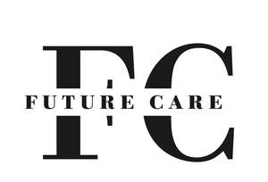

Trade Mark Journal No.2025/016 18 April 2025
UK00004153182 27 January 2025 (5,10,44)

- Class 5
- Skin care creams for medical use; Skin care preparations for medical use.
- Class 10
- Medical devices,Furniture adapted,Tubes,Medical dosage dispensers,Medical examination sheets,Condoms,Surgical apparatus and instruments,hosiery for medical use; Suture materials for medical use; Splinting materials for medical use; Plaster for medical or surgical purposes; Sheets [drapes] for medical use; Medical bags designed to hold medical instruments; Medical implants made of artificial materials; Sponge material for surgical use; Medical instruments; Physiological apparatus for medical use; Medical diagnostic apparatus for medical purposes; Blankets for medical purposes; Protective breathing masks made of non-woven materials for medical applications; Medical apparatus for urological purposes; Diagnostic apparatus for medical purposes used in medical laboratories; Light sources for electronic endoscopes for medical purposes; Surgical apparatus and instruments for medical use; Latex examination gloves for medical use; Examination gloves for medical use; Catheters for medical use; Medical examination gloves; Clothing, headgear and footwear, braces and supports, for medical purposes; Protective clothing for medical purposes; Medical apparatus and instruments; Elastic compression bandages for medical purposes; Support bandages for medical purposes; Staples for surgical use; Endoscopic equipment for medical purposes; Tubes for medical purposes; Medical devices, namely, intravascular implants comprised of artificial material; Medical dosage dispensers for medical use; Furniture adapted for medical treatment purposes; Condoms for medical purposes; Staplers for medical purposes.
- Class 44
- Medical care services; Medical care; Health care consultancy services [medical]; Health clinic services [medical]; Health care; Medical health assessment services; Medical and healthcare services; Human hygiene and beauty care; Consultancy relating to health care; Medical care and analysis services relating to patient treatment; Medical services for treatment of the skin; Home health care services; Health care relating to osteopathy; Beauty care; Professional consultancy relating to health care; Medical treatment services.
YU HE